Especialización
LiDAR y fotogrametría con drones y control geodésico, adaptados a la ingeniería, la construcción y el desarrollo urbano.
// LiDAR + fotogrametríaTopDrone Consultants · Panamá
Topografía LiDAR, fotogrametría, captura terrestre e inventarios georreferenciados: convertimos cada vuelo en datos listos para diseñar, construir y administrar, con control geodésico y en los formatos que tu equipo ya usa.
¿Solo necesitas el ortomosaico de tu lote? Dibújalo en el mapa y cotiza en 1 minuto
01 Diagnóstico de campo
Antes de hablar de drones, hablemos de lo que realmente está frenando a los proyectos de construcción, ingeniería civil e infraestructura en Panamá hoy: el control de obra sigue dependiendo de visitas, fotos sueltas y topografía lenta.
Semanas de estación total antes de poder diseñar, y reportes que no capturan el estado real del proyecto → decisiones lentas y retrabajos costosos.
Reportes manuales, sin un registro histórico objetivo que resista una auditoría.
Cada entidad maneja información distinta → confusiones y pérdida de control.
Visitas físicas en áreas extensas y peligrosas dificultan una inspección completa.
Información dispersa → comunicación lenta y decisiones inconsistentes.
02 Nuestro origen
LiDAR y fotogrametría con drones y control geodésico, adaptados a la ingeniería, la construcción y el desarrollo urbano.
// LiDAR + fotogrametríaCombinamos recopilación avanzada de datos aéreos con herramientas de software e inteligencia artificial.
// Datos + IA + SoftwareInformación digital que impulsa transparencia, eficiencia, precisión y ahorro de costos en cada etapa del proyecto.
// Resultados medibles03 Bitácora de vuelo
Presencia activa en todo el territorio panameño
04 Catálogo de servicios
Del lote en bruto a la obra terminada y su mantenimiento: topografía y cartografía LiDAR, mapeo fotogramétrico, inspección de obras e infraestructura, documentación y análisis de obras civiles, captura terrestre, volúmenes e inventarios georreferenciados, todo en una misma plataforma y en los formatos que tu equipo ya usa.
Para quién trabajamos: constructoras, promotoras, firmas de ingeniería civil, gerencia de proyectos y supervisión de obra (PMC), topógrafos, canteras y consultores ambientales en todo Panamá.
Levantamientos con PPK y puntos de control GNSS en la red del proyecto. Hectáreas por día en vez de semanas con estación total.
No es un video de dron: vuelos periódicos georreferenciados con comparación de superficies, corte y relleno, acopios y porcentaje de avance por frente, medidos contra los planos.
Documentación de la obra a nivel de piso: recorridos y panorámicas 360°, fotografías de detalle y reportes de campo, georreferenciados sobre los planos y en la misma plataforma que los vuelos.
Postes, tapas, luminarias, hidrantes, señales, árboles y áreas verdes: cada activo con foto, código, atributos y estado, en una plataforma que se abre desde el celular.
El terreno real debajo de la vegetación, listo para decidir dónde van calles, plataformas y drenaje, y cuánto cuesta prepararlo.
Vea el terreno y la vegetación de un lote antes de firmar, invertir o solicitar un permiso: una base objetiva, georreferenciada y defendible.
Medición periódica de acopios, frentes de extracción y plataformas con fotogrametría o LiDAR: metros cúbicos y toneladas auditables para inventario, facturación y planificación.
Conteos y trayectorias desde video aéreo, termografía e inspección de estructuras: lo que el proyecto necesite, con datos georreferenciados y sincronizados en tiempo.
Light Detection and Ranging es la medición aérea de alta precisión mediante pulsos láser que penetran la vegetación densa y producen nubes de puntos 3D del terreno real: la base para la cartografía, el mapeo topográfico y el diseño de ingeniería.
La fotogrametría es ideal para superficies visibles y áreas despejadas. El LiDAR es la solución cuando hay vegetación densa, se requiere precisión topográfica sub-decimétrica, o un análisis hidrológico. Volamos ambos en una sola movilización, con PPK y puntos de control GNSS en la red del proyecto.
Proyectos donde ya lo hacemos
Entregables
Flujo de trabajo de la nube de puntos a la ingeniería
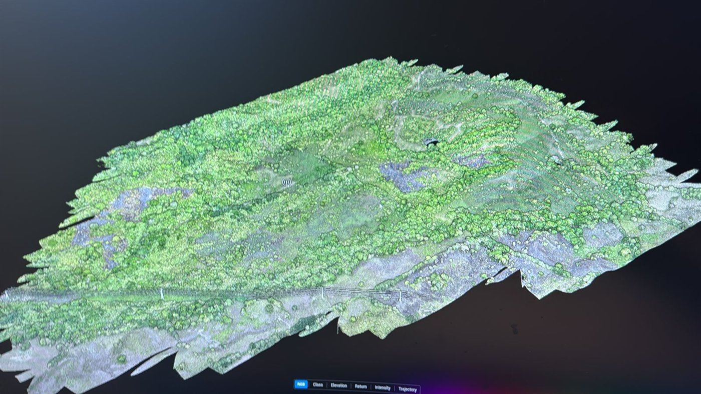
Millones de puntos 3D georreferenciados captados por el sensor.
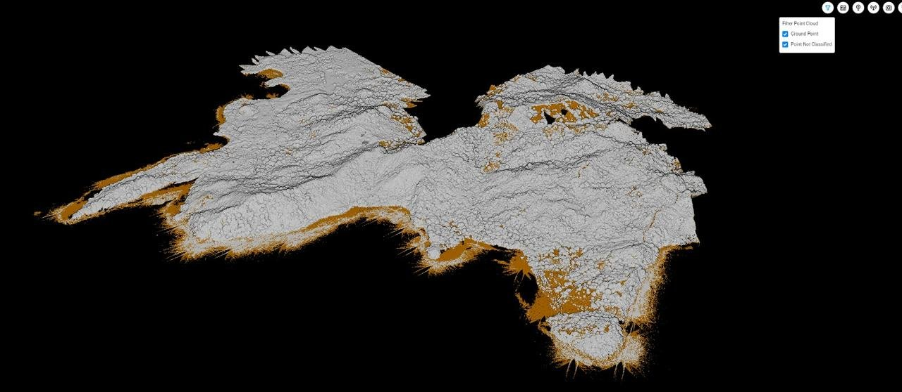
La clasificación separa el suelo de la vegetación y estructuras.
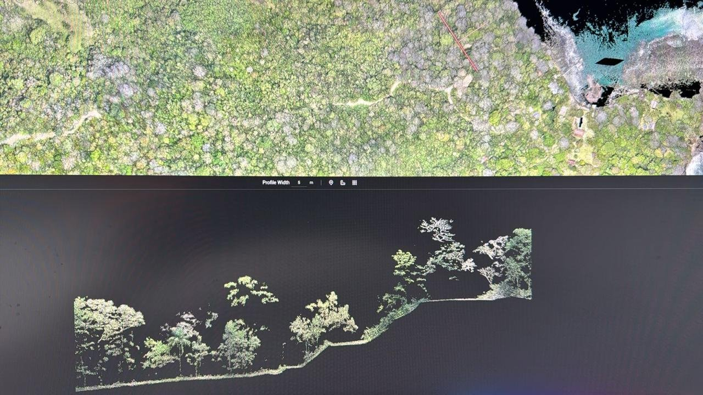
Secciones transversales miden el suelo real bajo la vegetación.
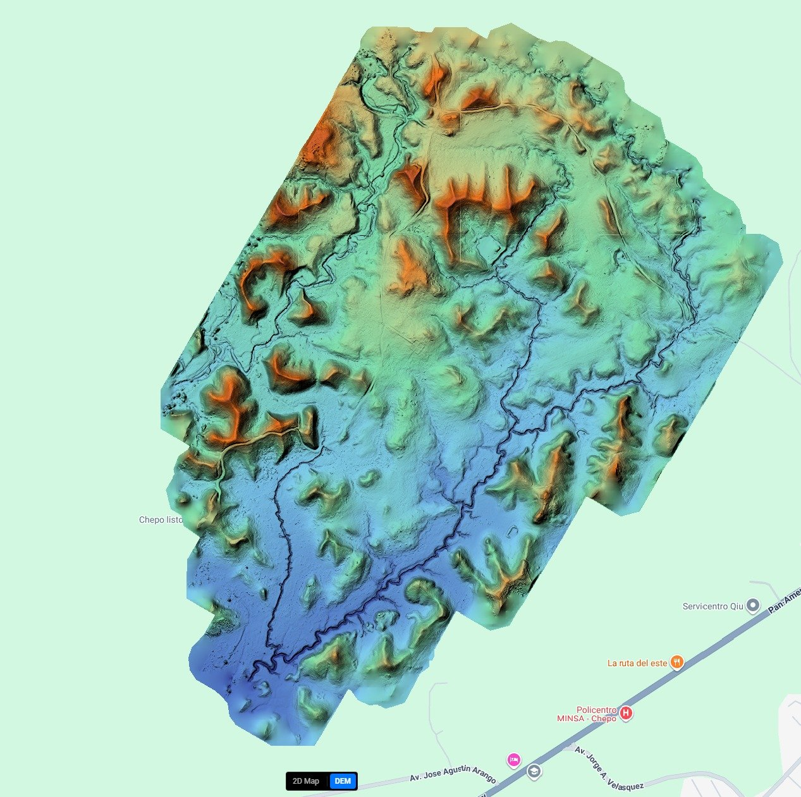
Modelo de elevación y curvas de nivel, listos para diseño.
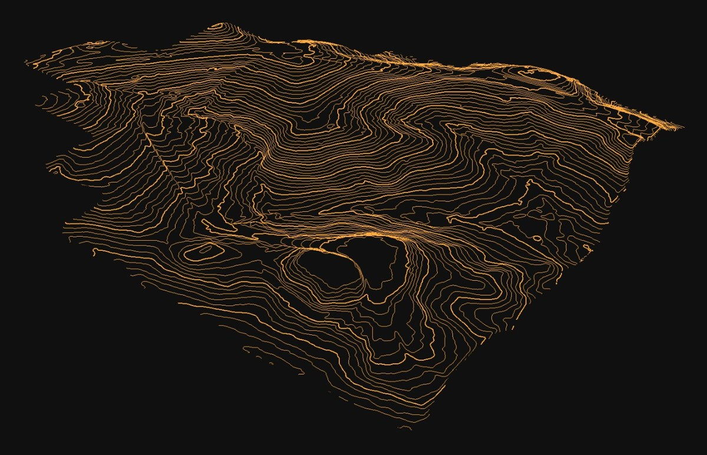
Generadas del terreno clasificado a 0.25, 0.5 o 1 m; entregadas en Civil 3D, DWG y LandXML.
Para firmas de ingeniería con trabajo recurrente: trabajamos como tu subcontratista geoespacial, con tarifa preferencial por hectárea o kilómetro, memoria de levantamiento firmada y sellada para licitaciones, y la misma plataforma para que tu cliente final consulte los datos.
05 Obras civiles
Inspección y documentación de obras con drones: vuelos periódicos y captura terrestre en una misma plataforma, con control geodésico: cada etapa de la obra documentada, medida y comparable fecha contra fecha, desde la pre-movilización hasta los detalles interiores. Selecciona una etapa para ver ejemplos reales.
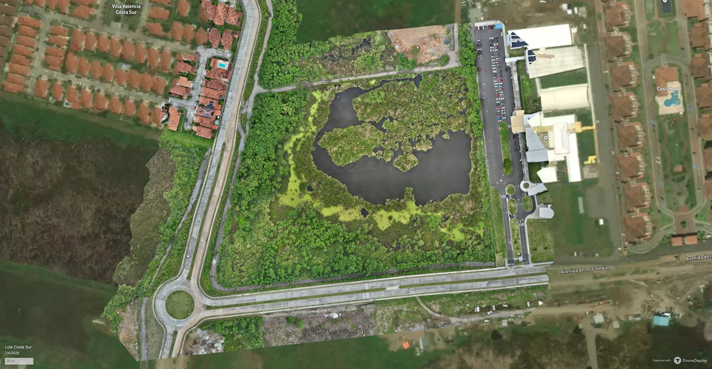
Condiciones existentesCapturamos las condiciones existentes del terreno antes de la primera piedra, con alertas rápidas y tempranas de cualquier inconveniente que evitan sorpresas costosas.
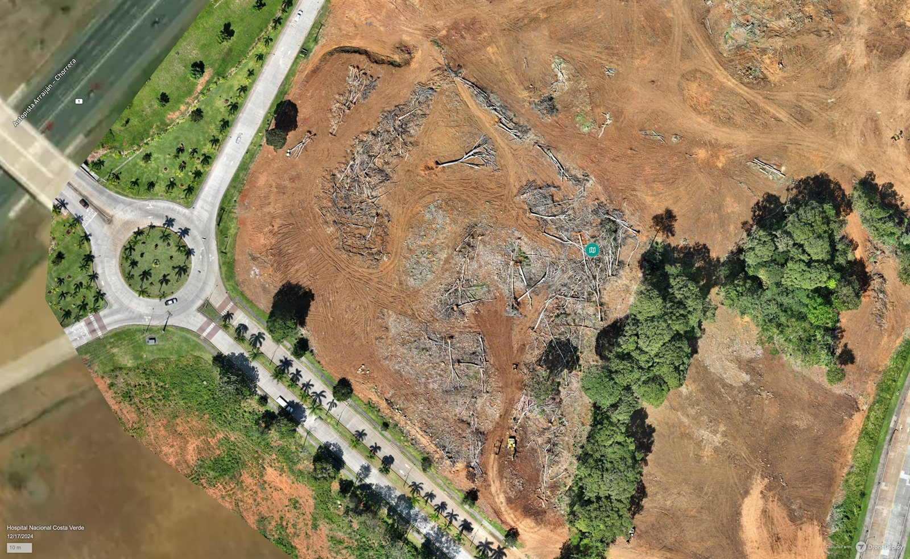
Movimiento de tierraDocumentación y análisis del proceso de limpieza y movimiento de tierra, con monitoreo de cortes y rellenos para reportes de progreso y presentación de cuentas.
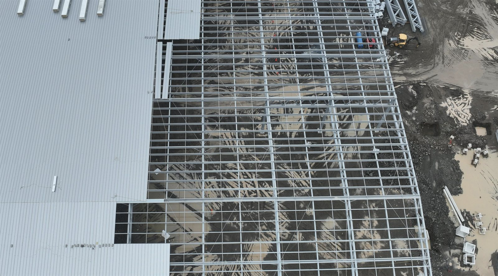
EstructuraInspección virtual de estructuras incorporando planos de zapatas y vigas para confirmar ubicaciones, corroborar niveles y detectar cambios necesarios a tiempo.
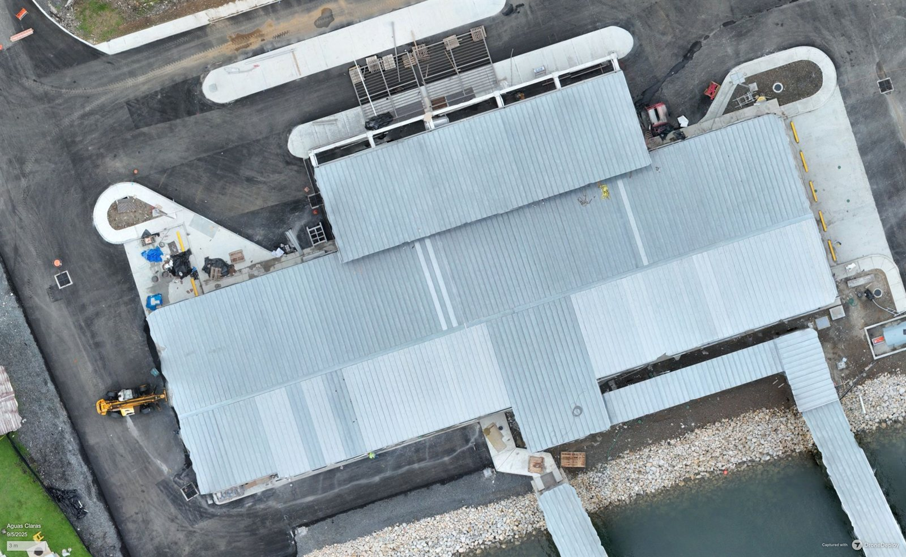
EnvolventeRealizamos inspecciones del exterior sin riesgos innecesarios y registramos las instalaciones de impermeabilización en techos y paredes, con documentación continua de avances.
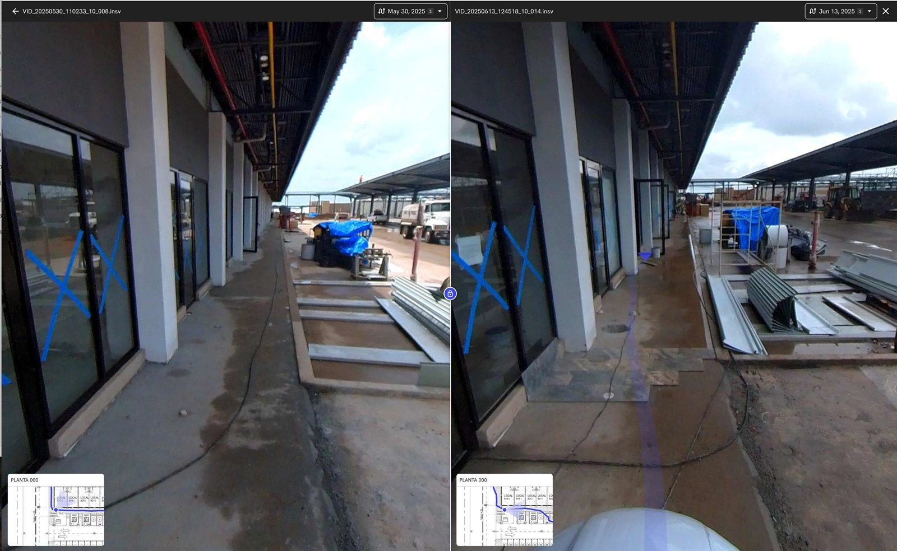
InterioresDocumentamos el enmarcado de paredes y las instalaciones mecánicas, eléctricas y de plomería antes de cerrar, previniendo retrabajos al identificar problemas a tiempo.
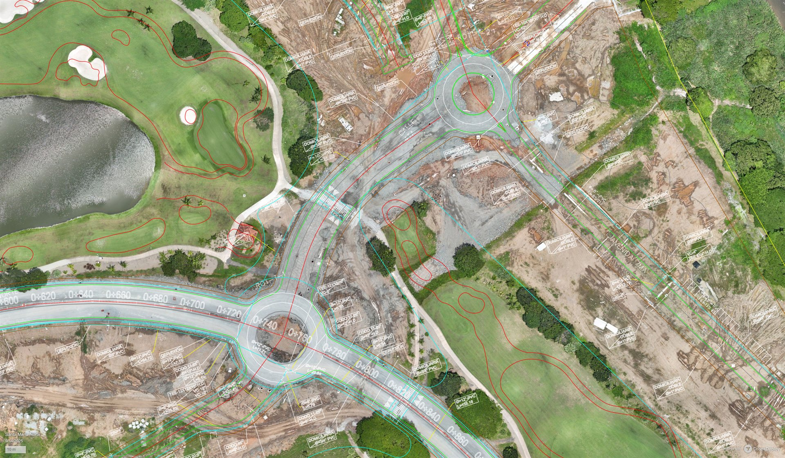
Vuelo en curso · ambos sentidosVuelos a velocidad constante sobre el eje vial en ambas direcciones, dentro de la ventana horaria definida por el cliente.
Sobrevuelos fijos en cada cuello de botella para documentar la causa probable de la congestión.
Cada evento observado queda asociado a un punto kilométrico y a una hora exacta.
Ubicación exacta, magnitud y causas probables de cada punto de congestión del corredor.
Ortomosaicos, modelos 3D y comparación de superficies entre vuelos: corte, relleno, acopios y porcentaje de avance por frente. Programados por hito o bajo retainer.
Recorridos y panorámicas 360°, fotografías de detalle y reportes de campo para lo que queda bajo techo y dentro de las paredes. Autocaptura con tu propio equipo (entregamos la cámara y la capacitación) o gestionada por un técnico de Top Drone.
06 Fichas técnicas
Seis fichas de dos páginas en PDF, listas para compartir con tu equipo o tu cliente: qué responde cada estudio, cómo funciona, entregables y casos reales.
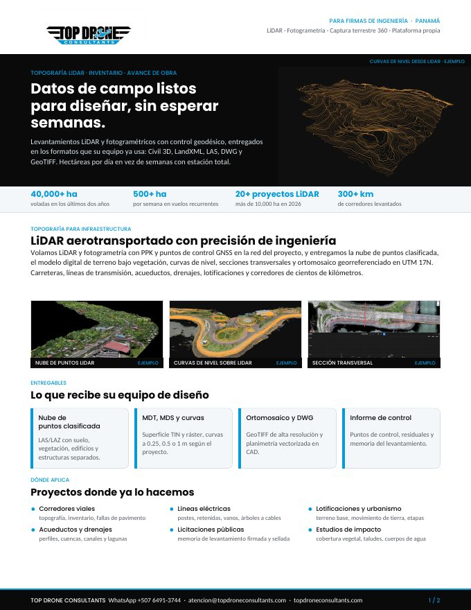
Firmas de ingeniería
Topografía LiDAR, inventario y avance de obra: entregables, dónde aplica y cómo trabajamos.
Descargar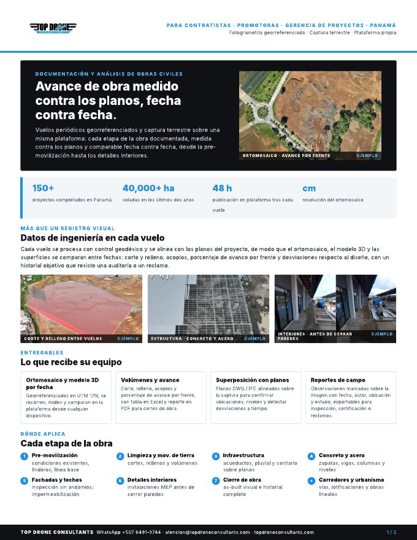
Contratistas · Promotoras · PMC
Avance medido contra los planos, fecha contra fecha: volúmenes, avance por frente, superposición con planos y reportes de campo.
Descargar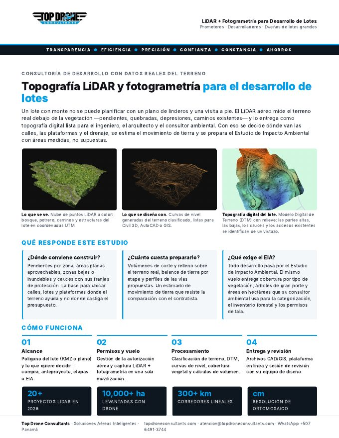
Promotores · Desarrolladores
Dónde conviene construir, cuánto cuesta prepararlo y qué exige el EIA, con casos de éxito.
Descargar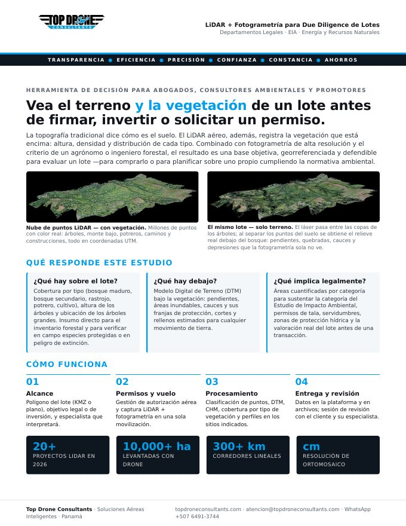
Legal · EIA · Energía
Vegetación y terreno medidos antes de firmar, invertir o pedir un permiso.
Descargar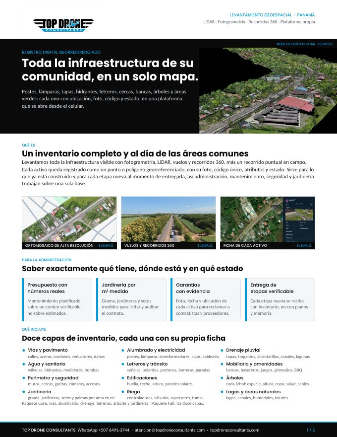
Administraciones · Comunidades
Doce capas de inventario georreferenciado y la plataforma donde viven los datos.
Descargar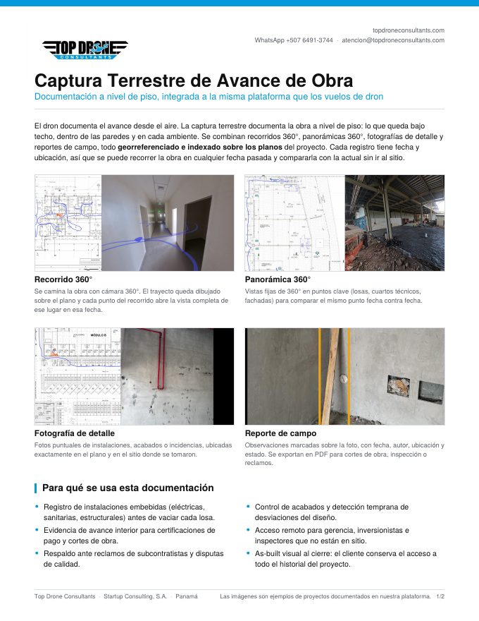
Contratistas · PMC · Inspectores
Recorridos 360°, reportes de campo y las dos modalidades: autocaptura o gestionada.
Descargar¿Necesitas una muestra con datos reales de proyectos actuales? Escríbenos y te mostramos resultados en pantalla, sin compromiso.
07 Preguntas frecuentes
Todo lo que una obra necesita desde el aire y desde el piso: levantamiento topográfico antes del diseño (LiDAR y fotogrametría), control de obra y supervisión de avance con vuelos periódicos georreferenciados medidos contra los planos, volúmenes de movimiento de tierra y acopios, inspección de estructuras, techos y fachadas sin andamios, documentación de instalaciones MEP antes de cerrar paredes y un as-built visual al cierre. Trabajamos con el contratista, la promotora y la gerencia de proyecto sobre una misma plataforma.
Topografía y cartografía con LiDAR y fotogrametría, mapeo de terrenos y lotes, inspección de obras, techos, fachadas e infraestructura, documentación y análisis de avance de obras civiles, captura terrestre, volúmenes de corte y relleno, inventarios georreferenciados de activos y estudios de tráfico. Operamos en todo el territorio panameño con autorización de la AAC.
El mapeo fotogramétrico genera ortomosaicos y modelos 3D de lo que la cámara ve; es ideal para áreas despejadas, avance de obra e inspección. La topografía LiDAR mide el terreno real debajo de la vegetación con precisión sub-decimétrica y produce curvas de nivel y modelos digitales de terreno listos para Civil 3D. En muchos proyectos volamos ambos en una sola movilización.
Trabajamos con PPK y puntos de control GNSS en la red del proyecto, en UTM 17N. El ortomosaico alcanza resolución centimétrica y el LiDAR entrega precisión vertical sub-decimétrica; cada entrega incluye informe de control con puntos, residuales y memoria del levantamiento.
Civil 3D, LandXML, LAS/LAZ, DWG, DXF, SHP, GeoJSON, KMZ, GeoTIFF, Excel y PDF, además del acceso a nuestra plataforma en línea para ver, medir y compartir el proyecto.
Depende del área, la precisión requerida y los entregables. Para ortomosaicos de lotes puedes cotizar en línea en un minuto dibujando el polígono; para LiDAR, obras civiles o inventarios envíanos el KMZ o plano y te preparamos un alcance y propuesta en 48 horas.
08 Voces del campo
Las actualizaciones constantes y precisas de Top Drone hacen una gran diferencia. Saber que siempre habrá tomas del proyecto nos permite tomar decisiones con mayor agilidad y detectar problemas a tiempo.
Fue la primera vez que utilicé imágenes aéreas y se convirtieron en una herramienta clave para visualizar el avance mes a mes. Las mediciones, secciones transversales y comentarios de campo fueron fundamentales.
Esta plataforma marcó un antes y un después. Sus herramientas innovadoras hicieron el proceso más eficiente. Es un verdadero "seguro" para entender cómo se desarrolló cada parte del proyecto.
09 Registro de vuelo
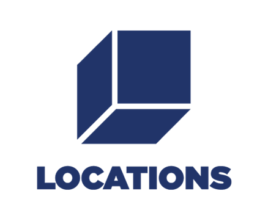
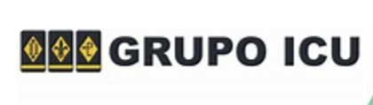
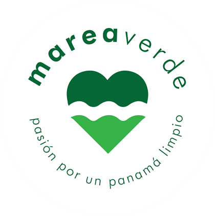
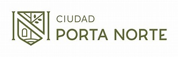
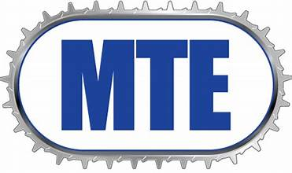
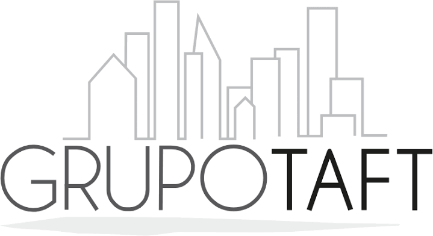
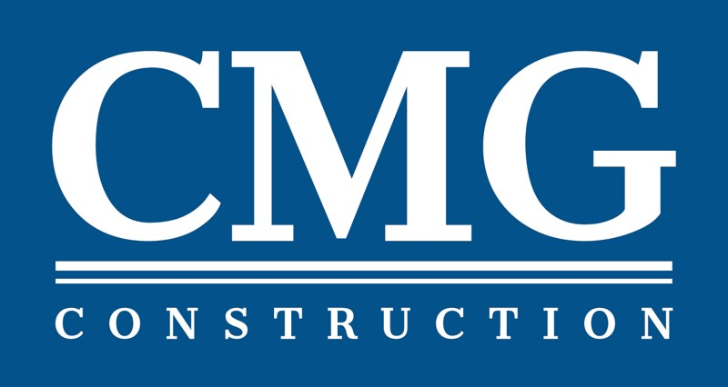
10 Ventaja competitiva
150+ proyectos para constructoras, promotoras y firmas de ingeniería civil en todo Panamá: urbanizaciones, naves industriales, vías, acueductos y canteras.
Una base creciente de socios que destacan nuestra precisión, confiabilidad e impacto.
LiDAR aerotransportado con control geodésico, fotogrametría, captura terrestre y plataforma propia.
Recolección más rápida, costos reducidos y retrasos minimizados.
Tu información, resguardada bajo los más altos estándares de seguridad electrónica.
11 Para ir más allá
Pregunta por nuestras opciones de colaboración a largo plazo.
Para empresas con múltiples proyectos o supervisión continua
Para empresas que ya cuentan con pilotos y/o drones
Para firmas de ingeniería con levantamientos recurrentes
Misión: contacto
Hablemos de tu próximo levantamiento, inspección o programa de documentación. Envíanos el polígono (KMZ o plano) y te preparamos un alcance y una propuesta en 48 horas.